Part 4: Global Illumination
Indirect Lighting Function
The indirect lighting function, at_least_one_bounce_radiance, calculates the light that bounces multiple times before reaching the camera.
First, we convert the outgoing ray direction (-r.d) from world space coordinates to local space coordinates (w_out). We initialize the total outgoing light, L_out, to \((0, 0, 0)\). If isAccumBounces is true, or if the current ray depth is exactly 1, we calculate the direct lighting by calling one_bounce_radiance(r, isect) and add it to L_out. If the ray depth is 1 or less, we stop here and return L_out.
Next, to calculate the indirect light coming from the rest of the scene, we need to sample a new incoming direction. We call isect.bsdf->sample_f(w_out, &w_in, &pdf). This function gives us a random incoming direction w_in, returns the BSDF value \(f(w_{out}, w_{in})\), and evaluates the PDF for this sampled direction.
Russian Roulette: We set a probability, cpdf = 0.7. We call coin_flip(cpdf). If the coin flip returns false, we terminate the ray and simply return the current L_out. If it returns true, we continue to trace the bounce.
Then, we convert the sampled local direction w_in back to world space coordinates (w_in_world). Then, we create a new bounce_ray. We check if this new bounce_ray intersects with anything in the scene. If it hits an object, we recursively call at_least_one_bounce_radiance(bounce_ray, new_isect) to get the incoming indirect light, L_indirect.
Finally, we use the Monte Carlo estimator formula to calculate the contribution of this bounce and add it to L_out:
Global Illumination Renderings
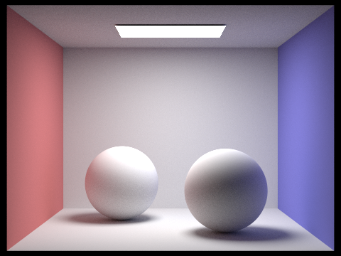
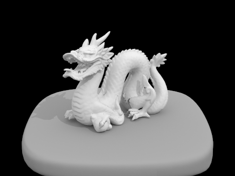
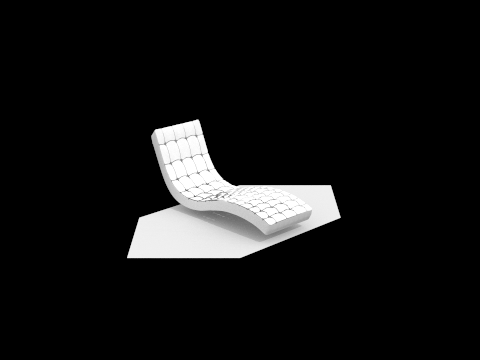
Direct/Indirect Illumination
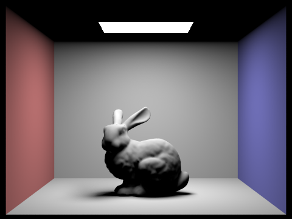
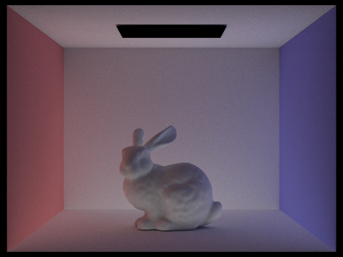
\(m\)-th Bounce of Light
| isAccumBounces | \(m=0\) | \(m=1\) | \(m=2\) | \(m=3\) | \(m=4\) | \(m=5\) |
|---|---|---|---|---|---|---|
| True |  |
 |
 |
 |
 |
 |
| False |  |
 |
 |
 |
 |
 |
2nd and 3rd Bounces vs. Rasterization
In the 2nd bounce image, we can clearly see color bleeding. The colored walls reflect light onto the bunny. The black ceiling is now lit by light bouncing from the floor.
The 3rd bounce is much darker because surfaces absorb light energy. But it still adds soft light to the deep shadows.
Rasterization usually uses direct lighting and fake ambient light. This physical path tracing approach creates significantly higher quality and more realistic images, because it naturally simulates how light actually scatters and interacts with materials in the real world.
Accumulated vs. Unaccumulated
The unaccumulated views become progressively darker with each extra bounce since surfaces absorb energy at every interaction. The accumulated views become progressively brighter and softer as they sum up all these layers of light. The biggest visual jump in the accumulated renders happens between depth 1 and 2, where the black shadows are softened by the first layer of indirect light; subsequent depths add brightness and remove noise, which perfectly aligns with the fading energy we see in the higher-depth unaccumulated renders.
Russian Roulette Renderings
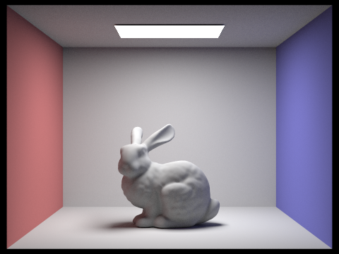
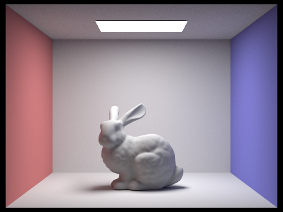
Sample-Per-Pixel Rates
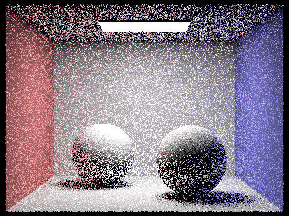
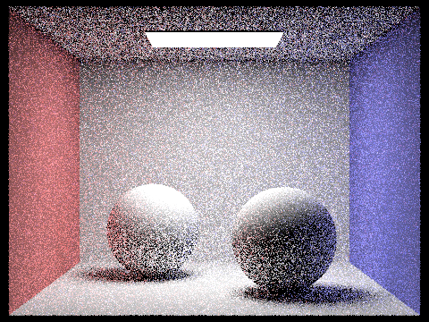
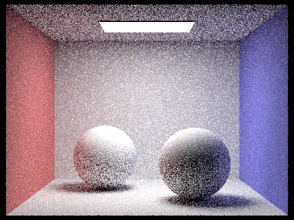
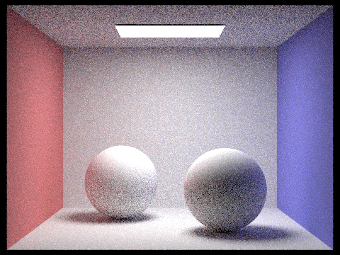
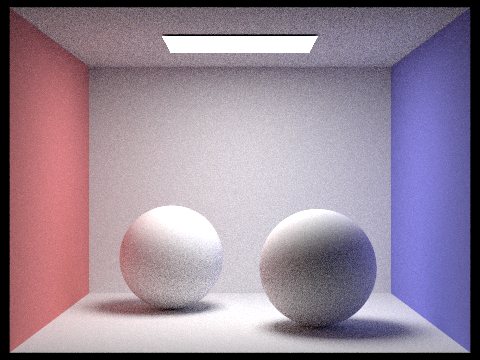
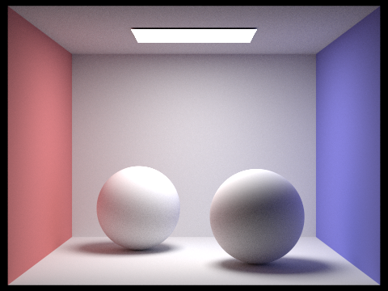
As the sample-per-pixel rate increases, the noise in the image drops significantly. At very low rates like 1, 2, and 4 spp, the image is extremely noisy because the Monte Carlo estimation has high variance. As we increase the number of samples, the variance decreases and the image converges to the true result.
By 64 spp, the image is much smoother, but noise is still visible in the shadows. At 256, 1024 spp, the noise is almost gone, giving us a clean render with smooth shadows and clear global illumination. This perfectly shows how adding more samples improves the accuracy of the Monte Carlo estimate.